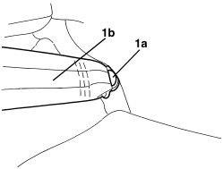
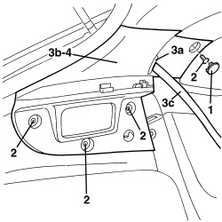

7040H42 REAR PILLAR TRIM (ONE), LEFT OR RIGHT- R.R
- Path
- Procedures > 70 FITTINGS > 7040 BODY INTERIOR FITTINGS AND TRIM > 7040H ROOF PANEL AND PILLARS LINING > 7040H42 REAR PILLAR TRIM (ONE), LEFT OR RIGHT- R.R
- Kind
- repair procedure (removal / refitting; the operation number is the code)
- Applies to
- all engines; all production periods
- Interactive page
- https://sloeber94.github.io/elrnDB-aBrrSpdr/en/#/946002635
Applies to: all engines; all production periods
 Removing
Removing
 Refitting
Refitting- Remove the rear parcel shelf.
- For the left trim.
Op. 7040G30 BOOT LIGHT BULB HOLDER - R.R.
Op. 7050A22 REAR SEAT CUSHION - R+R
1. Undo the fixing bolt (1a) and release the end (1b) of the rear side seat belt.

Applies to: all engines; all production periods
1. Release the bolt covers.
2. Undo the bolts.
3. Release the trim (3a) from the pillar cover (3b) and release the seat belt (3c) from the actual pillar cover.
4. Keep the pillar trim.

Applies to: all engines; all production periods
Refitting
Removing- Check that the rear pillar cover is not damaged.
- Place the pillar trim in position and attach the seat belt and the trim.
- Tighten the bolts.
- Fit the bolt covers.
- Position the end of the rear side seat belt and tighten the bolt to the specified torque.
Op. 7050A22 REAR SEAT CUSHION - R+R
Op. 7040G30 BOOT LIGHT BULB HOLDER - R.R.
- Remove the rear parcel shelf.
Topics linked from this page (2)
Topics that link to this page (26)
- S060 REAR CREAKING
- 5570T28 CONTROL UNIT FOR RADIO AERIAL - R.R.
- 5570T61 MULTI-FUNCTION AERIAL - R.R.
- 5570T96 REAR SIDE SPEAKER (ONE), LEFT OR RIGHT- R.R
- 5580C40 SIDE BAG SENSOR (ONE), LH OR RH - R.R.
- 5580C50 WINDOW BAG MODULE (ONE) LH OR RH - R.R
- 7030L10 TRANSPARENT ROOF PANEL - R.R.
- 7030L11 TRANSPARENT ROOF PANEL - R.R. FOR VERSIONS WITH SUN BLIND
- 7030L12 TRANSPARENT ROOF PANEL COVER - R.R.
- 7030L20 SUN BLIND ASSEMBLY - R.R.
- 7030L21 SUN BLIND ASSEMBLY - ALIGNMENT
- 7030L22 SLIDING SUN BLIND - R.R.
- 7030L23 SUN BLIND CROSSMEMBER - R.R.
- 7030L24 SLIDING BLIND MOVEMENT MOTOR - R.R.
- 7030L25 SLIDING BLIND DRIVE CABLES - R.R.
- 7030L26 SLIDING BLIND RETAINING CLIP (ONE), LEFT OR RIGHT - R.R.
- 7035C14 FIXED REAR SIDE WINDOW (ONE) LEFT OR RIGHT - R.R INCLUDES CLEANING HOUSING
- 7040H10 ROOF PANEL LINING - R.R.
- 7040H50 REAR PANEL (ONE), LEFT OR RIGHT - R.R
- 7040H51 ODDMENTS POCKET ON REAR SIDE PANEL (ONE), LEFT OR RIGHT - R.R.
- 7040H53 MOULDING ON REAR SIDE PANEL (ONE), LEFT OR RIGHT - R.R.
- 7040H54 GRILLE FOR SPEAKER IN REAR SIDE PANEL (ONE), LEFT OR RIGHT - R.R.
- 7040H55 COVER ON REAR SIDE PANEL (ONE), LEFT OR RIGHT - R.R.
- 7040L10 PASSENGER COMPARTMENT FLOOR COVERING - R.R.
- 7065A12 FRONT SEAT BELT (ONE), LEFT OR RIGHT, WITH PRETENSIONER ON REEL - R.R
- 7065B10 REAR SEAT BELT (ONE), LEFT OR RIGHT - R.R.